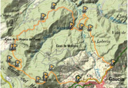

FICHA REALIZADA POR PABLO GALÁN Y SERGIO PINTO
INVITADOS: Podrán participar las veces que se estime oportuno, haciendose responsables de si mismo y firmando el impreso de excimisión de responsabilidad
DESPLAZAMIENTO:el desplazamiento se realizará en nuestros propios vehículos, repartiendonos en el punto de encuentro
En caso de accidente: Llamar al número de Emergencias 112, Guardia Civil 062 y al teléfono de la compañía de seguros concertada 902 110 026


BREVE DESCRIPCIÓN
Partiendo desde Gaucin, la ruta tiene objetivo principal ascender a la Sierra del Hacho (1 ,011 m.) y recorrer su arista. Se desciende
por Ia clásica verada de retorno de la IX Via Ferrata el Caminodel Peso, a continuación un precioso circular por los densos bosques de los
montes de Gaucín. Nos encontramos en el límite del Parque Natural Los Alcornocales. Partimos desde la gasolinera
que se encuentra a la entrada del pueblo. A su espalda, comienza el sendero histórico
que se dirige hacia la pedanía de El Colmenar, coloquialmente llamada Estación de
Gaucín, a pesar de encontrarse en el término municipal de Cortes de la Frontera.
DESAYUNAREMOS EN LA PARADA (LA PALMOSA)
RECOMENDACIONES • Si te interesa la flora y la fauna, RESPETALA, y llévatela
pero sólo en tu cámara de fotos • Intenta no abandonar los senderos. • No dejes basuras ni
señal alguna de tu paso. • No enciendas fuegos, No fumes.• Estás en un Parque Natural, intenta
NO HACER RUIDO Y NO MOLESTES A LOS ANIMALES. • No hagas señales en pare-
des ni troncos •SIGUE EN TODO MOMENTO LAS INDICACIONES DELOS MONITORES DE LA
ACTIVIDAD, Y RECUERDA: " TU SEGURIDAD Y LA DEL GRUPO DEPENDE DE ELLO"
CONSEJOS • Lleva material y equipo apropiados. • No olvides el agua y comida, • Ropa
de repuesto para dejar en el coche/bus • Ropa de agua (Chubasquero) y de abrigo • Crema y
protector labial • Frontal (si se tiene) • No olvidar llevar un gorro o similar y guantes. Bastones,
Botiquín, mapa de la zona NO TE SEPARES DEL GRUPO
TIPO DE ACTIVIDAD
SENDERISMO
LOCALIZACIÓN
SERRANA DE RONDA VALLE DEL GENAL
ACCESO
A-337 MANILVA GAUCIN
PUNTO DE PARTIDA
CENTRO URBANO DE GAUCIN
PUNTO DE LLEGADA
CENTRO URBANO DE GAUCIN
DIA Y HORA DE SALIDA
SABADO 21 ABRIL 630 h.
DURACIÓN APROXIMADA Y DISTANCIA
14 Km. - 7 HORAS
DIFICULTAD
ALTA
DESNIVEL
739 - 739
DISTANCIA EN COCHE / APORTE
300 Kms. - 13 Euros
GUIA / COORDINADOR
CARLOS BELLIDO
CONTACTO
bellidosendero@gmail.com
El participante afirma tener conocimiento de que la actividad a realizar es peligrosa y puede tener consecuencias imprevisibles al desarrollarse en terreno montañoso de aventura. El participante reconoce que ha sido informado de todas las características de la actividad (físicas, psicológicas, material, lugar, etc.) y realiza la misma con pleno conocimiento de las mismas. "El participante reconoce que no va con ninguna empresa y no paga nada por estos servicios y que viene libremente como un amigo más del grupo. EI convocante de Ia ruta no se responsabiliza de ningún accidente o lesión que pueda tener o provocar cualquier miembro o invitado en una salida, ni de los daños materiales que estos causen, siendo cada uno responsable de sus actos en las rutas donde voluntariamente asista, así como de su estado físico y técnico. Por favor, se prudente y respetuoso con el medio ambiente.